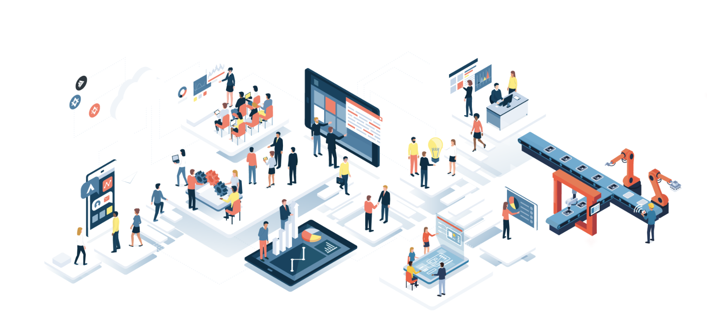

Product
What is Low-Ops?
Low-Ops is specifically designed to streamline the deployment and management of Mendix low-code applications, empowering businesses to accelerate their digital transformation journey.
With Mendix's renowned low-code development capabilities, we provide a comprehensive solution that simplifies the entire lifecycle of building, deploying, and managing applications. Whether you're a developer, IT administrator, or business stakeholder, our platform offers a seamless and collaborative environment for your Mendix applications.
How it works
Efficiency is key
- Our platform can be installed on your infrastructure in just 10 minutes, providing a seamless integration experience.
- With the assistance of Low-Ops, deploying any Mendix applications is a breeze, taking less than 3 minutes to complete.
- Make changes to your application code at any time, and witness the updates seamlessly reflected in the cloud without delay.
- Low-Ops provides a comprehensive overview of your application's performance, allowing you to monitor and manage your applications with ease.
-
01 Private cloud platform setup takes months to start and years to mature.
Low-Ops effectively addresses the challenge of lengthy private cloud platform setup and maturation by offering a seamless installation process that takes only 10 minutes. With Low-Ops, organizations can quickly and effortlessly install the platform on their existing infrastructure, bypassing the need for extensive setup procedures that typically take months to complete. Low-Ops doesn't compromise on the maturity of the platform. While the installation itself is swift, Low-Ops provides a comprehensive solution that supports the long-term growth and maturation of the private cloud platform.
-
02 Application onboarding takes days/weeks to complete.
Low-Ops streamlines the application onboarding process by combining user-friendly interfaces, automation, preconfigured templates, and seamless integrations. This results in a significant reduction in the time it takes to onboard applications, enabling developers to onboard their applications in minutes instead of days or weeks.
-
03 Too much dependency on the rest of the organization in delivering platforms and applications.
Low-Ops mitigates the challenges associated with organizational dependencies by providing a self-service platform that enables developers to take charge of the entire application delivery process, resulting in increased speed, agility, and efficiency. By streamlining and automating these processes, Low-Ops allows developers to quickly and independently deploy applications, reducing the need for extensive coordination and communication with other teams. This eliminates potential bottlenecks and delays, enabling faster and more efficient application delivery.
-
04 Slow start and low maturity hinders transformation speed.
Low-Ops solves the problem of slow start and low maturity hindering transformation speed by utilizing cutting-edge digital transformation technologies. It enables organizations to embrace modern technologies, automate processes, and streamline their operations, leading to accelerated digital transformation and improved competitiveness in the digital era.

Why Low-Ops?
7 Reasons to choose Low-Ops platform
- Accelerate Time to Market: Low-Ops simplifies and accelerates the process of onboarding applications, allowing you to quickly deploy and start using your applications without unnecessary delays. This helps you accelerate your time to market and gain a competitive edge.
- Enhanced Security Compliance: Rest assured knowing that your applications and data are protected with comprehensive security measures.
- Robust Disaster Recovery: Your data is invaluable, and we prioritize its protection. Low-Ops provides comprehensive disaster recovery solutions, empowering you to take control and recover quickly in the event of unforeseen incidents.
- Unwavering Stability: Ensure uninterrupted operations as Low-Ops undergoes meticulous testing and validation to prevent disruptions.
- Efficient Automation: Low-Ops reduces manual effort by automating repetitive tasks, allowing your team to focus on more strategic and value-added activities.
- Seamless Scalability: As your business grows, Low-Ops scales with you. Our platform is designed to handle increasing workloads and accommodate your expanding needs, providing a seamless and efficient experience.
- Developer Ecosystem: Empower developers to excel with a user-friendly interface, tools, and resources all conveniently available in one location.
Are you prepared to embark on your digital transformation journey with Low-Ops?
Get ready to embrace a new era of innovation and efficiency.
About Us
We are a team of highly skilled engineers dedicated to simplifying the deployment of Mendix Applications on Private Cloud. Our expertise lies in minimizing operational overhead, empowering businesses to prioritize growth and value while we handle the rest.
Contact
We value your interest and would be delighted to assist you. Whether you seek further information about our product, its features, or wish to request a demo, our team is ready to answer any inquiries you may have. Kindly send us an email, and we will promptly get back to you with the information you need.
Location:
CIC Rotterdam
Address:
4th floor, Stationsplein 45, 3013 AK Rotterdam
Email:
low-ops@cinaq.com